Show/Hide Code
library(ggraph) # 用于绘制图形
library(igraph) # 用于图形处理
library(tidyverse)
library(RColorBrewer) # 用于颜色处理
library(collapsibleTree) # 用于交互式树状图
library(dendextend) # 用于树状图的扩展和定制library(ggraph) # 用于绘制图形
library(igraph) # 用于图形处理
library(tidyverse)
library(RColorBrewer) # 用于颜色处理
library(collapsibleTree) # 用于交互式树状图
library(dendextend) # 用于树状图的扩展和定制树状图（dendrogram）是一种用于展示层级关系的图形，通常用于聚类分析或分类数据的可视化。它通过连接节点来表示不同层级之间的关系。
# 加载绘图和数据处理所需的包
library(ggraph) # 用于高级图形绘制，特别是网络和树状结构
library(igraph) # 用于图结构的创建和处理
library(tidyverse) # 用于数据处理
# 创建一个边列表数据框，定义树状结构的层级关系
# 第一层：origin 指向 5 个 group
d1 <- data.frame(from = "origin", to = paste("group", seq(1, 5), sep = ""))
# 第二层：每个 group 指向 5 个 subgroup，共 25 个 subgroup
d2 <- data.frame(from = rep(d1$to, each = 5), to = paste("subgroup", seq(1, 25), sep = "_"))
# 合并两层边数据，形成完整的边列表
edges <- rbind(d1, d2)
# 根据边列表创建 igraph 图对象
mygraph <- graph_from_data_frame(edges)
# 使用 ggraph 绘制基础树状图（dendrogram）
ggraph(mygraph, layout = 'dendrogram', circular = FALSE) +
geom_edge_diagonal() + # 绘制树的边（对角线样式）
geom_node_point() + # 绘制节点
theme_void() # 去除背景和坐标轴，使图形更简洁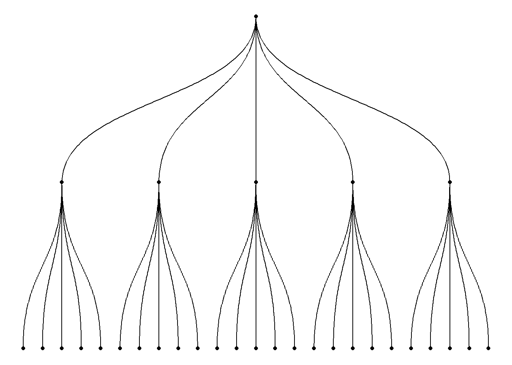
需要把嵌套数据框（nested dataframe）转换为边列表（edge list）
# 加载所需的包
library(ggraph) # 用于高级图形绘制，特别是网络和树状结构
library(igraph) # 用于图结构的创建和处理
library(tidyverse) # 用于数据处理
# 创建一个嵌套数据框，包含三层层级关系
data <- data.frame(
level1 = "CEO", # 第一层：CEO
level2 = c(rep("boss1", 4), rep("boss2", 4)), # 第二层：boss1 和 boss2，各自有4个下属
level3 = paste0("mister_", letters[1:8]) # 第三层：8个下属，命名为 mister_a ~ mister_h
)
# 将嵌套数据框转换为边列表（edge list）
# 第一层到第二层的边
edges_level1_2 <- data |>
select(level1, level2) |>
unique() |>
rename(from = level1, to = level2)
# 第二层到第三层的边
edges_level2_3 <- data |>
select(level2, level3) |>
unique() |>
rename(from = level2, to = level3)
# 合并所有边
edge_list <- rbind(edges_level1_2, edges_level2_3)
# 根据边列表创建 igraph 图对象
mygraph <- graph_from_data_frame(edge_list)
# 使用 ggraph 绘制树状图（dendrogram）
ggraph(mygraph, layout = 'dendrogram', circular = FALSE) +
geom_edge_diagonal() + # 绘制树的边（对角线样式）
geom_node_point() + # 绘制节点
theme_void() # 去除背景和坐标轴，使图形更简洁# 加载所需的包
library(ggraph) # 用于高级图形绘制，特别是网络和树状结构
library(igraph) # 用于图结构的创建和处理
library(tidyverse) # 用于数据处理
# 构建边列表数据框，定义树状结构的层级关系
# 第一层：origin 指向 7 个 group
d1 <- data.frame(from = "origin", to = paste("group", seq(1, 7), sep = ""))
# 第二层：每个 group 指向 7 个 subgroup，共 49 个 subgroup
d2 <- data.frame(
from = rep(d1$to, each = 7),
to = paste("subgroup", seq(1, 49), sep = "_")
)
# 合并两层边数据，形成完整的边列表
edges <- rbind(d1, d2)
# 构建节点属性数据框
# name：节点名称
# group：所属分组（group1~group7），origin和group节点为NA
# cluster：随机分配的类别（a~d）
# value：随机分配的数值（10~30）
name <- unique(c(as.character(edges$from), as.character(edges$to)))
vertices <- data.frame(
name = name,
group = c(rep(NA, 8), rep(paste("group", seq(1, 7), sep = ""), each = 7)),
cluster = sample(letters[1:4], length(name), replace = TRUE),
value = sample(seq(10, 30), length(name), replace = TRUE)
)
# 根据边列表和节点属性创建 igraph 图对象
mygraph <- graph_from_data_frame(edges, vertices = vertices)
# 直线条
ggraph(mygraph, layout = 'dendrogram') +
geom_edge_link() +
theme_void() # 去除背景和坐标轴，使图形更简洁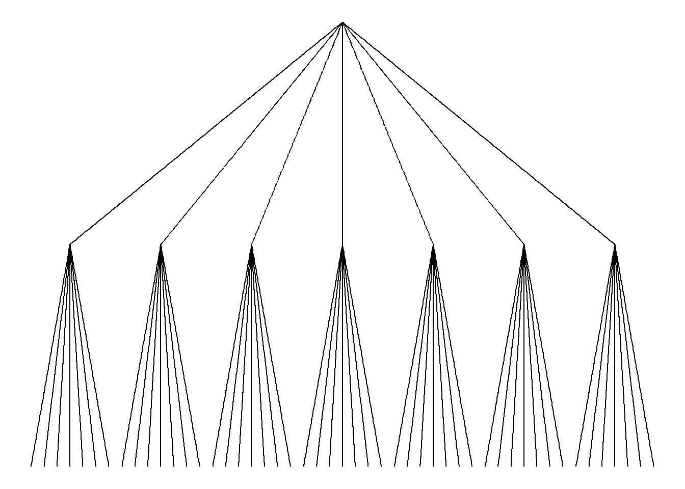
# 曲线条
ggraph(mygraph, layout = 'dendrogram') +
geom_edge_diagonal() +
theme_void() # 去除背景和坐标轴，使图形更简洁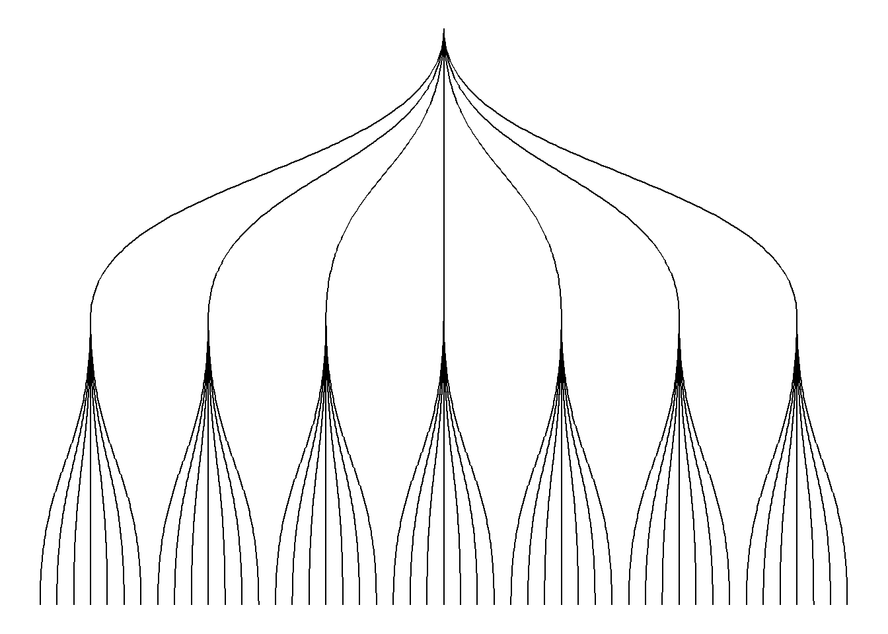
# 使用ggraph绘制树状图，并在叶节点处添加标签
ggraph(mygraph, layout = 'dendrogram') +
geom_edge_diagonal() + # 绘制树的边（对角线样式）
geom_node_text(
aes(label = name, filter = leaf), # 仅对叶节点添加标签
angle = 90, # 标签旋转90度
hjust = 1, # 标签右对齐
nudge_y = -0.01 # 标签向下微调
) +
ylim(-.4, NA) + # 调整y轴范围，使标签显示完整
theme_void() # 去除背景和坐标轴，使图形更简洁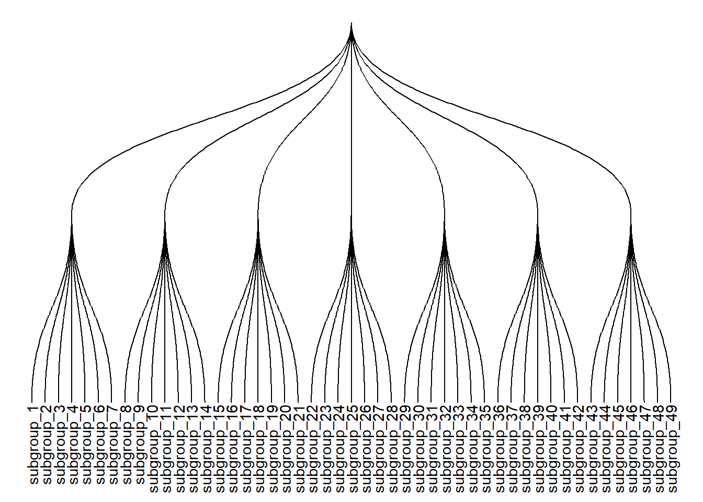
# 再绘制一个树状图，进一步定制叶节点样式
ggraph(mygraph, layout = 'dendrogram') +
geom_edge_diagonal() + # 绘制树的边（对角线样式）
geom_node_text(
aes(label = name, filter = leaf), # 仅对叶节点添加标签
angle = 90, # 标签旋转90度
hjust = 1, # 标签右对齐
nudge_y = -0.04 # 标签向下微调
) +
geom_node_point(aes(filter = leaf), alpha = 0.6) + # 仅对叶节点绘制半透明点
ylim(-.5, NA) + # 调整y轴范围，使标签和点显示完整
theme_void() # 去除背景和坐标轴，使图形更简洁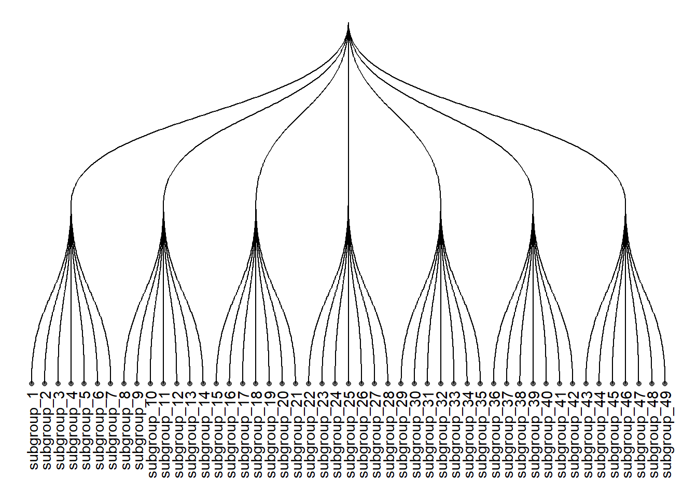
# 使用ggraph绘制树状图，定制叶节点标签、颜色和大小
ggraph(mygraph, layout = 'dendrogram') +
geom_edge_diagonal() + # 绘制树的边（对角线样式）
geom_node_text(
aes(label = name, filter = leaf, color = group), # 仅对叶节点添加标签，并按分组着色
angle = 90, # 标签旋转90度
hjust = 1, # 标签右对齐
nudge_y = -0.1 # 标签向下微调
) +
geom_node_point(
aes(filter = leaf, size = value, color = group), # 仅对叶节点绘制点，按分组着色，按value调整大小
alpha = 0.6 # 点的透明度
) +
ylim(-.6, NA) + # 调整y轴范围，使标签和点显示完整
theme(legend.position = "none") + # 隐藏图例
theme_void() # 去除背景和坐标轴，使图形更简洁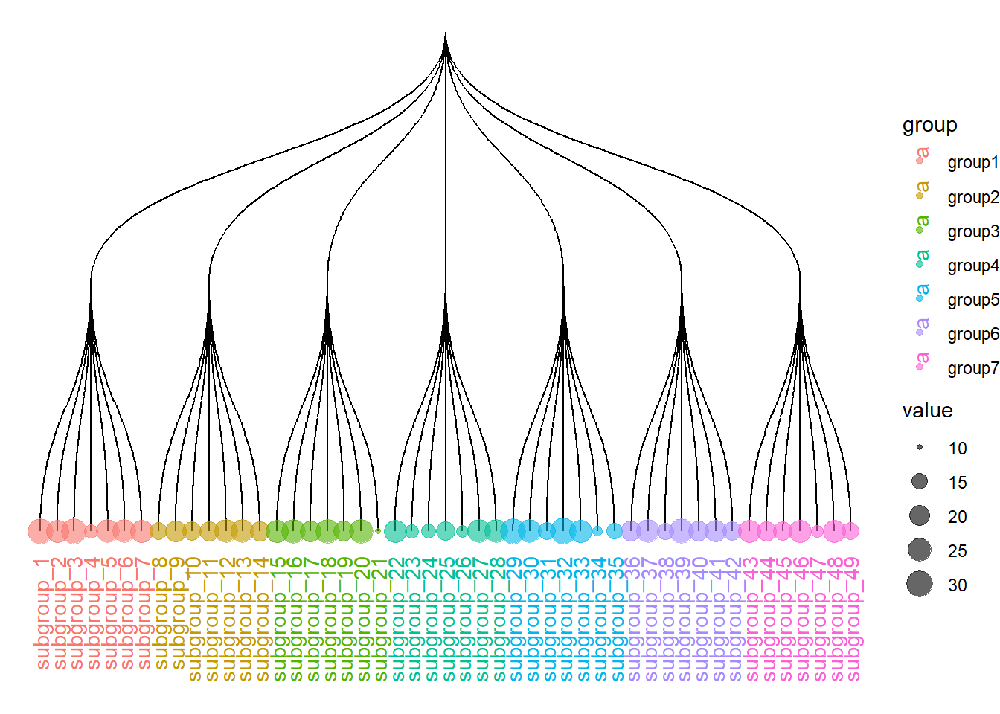
# 加载所需的包
library(ggraph) # 用于高级图形绘制，特别是网络和树状结构
library(igraph) # 用于图结构的创建和处理
library(tidyverse) # 用于数据处理
library(RColorBrewer) # 用于调色板
# 创建边列表数据框，定义树状结构的层级关系
# 第一层：origin 指向 10 个 group
d1 <- data.frame(from = "origin", to = paste("group", seq(1, 10), sep = ""))
# 第二层：每个 group 指向 10 个 subgroup，共 100 个 subgroup
d2 <- data.frame(
from = rep(d1$to, each = 10),
to = paste("subgroup", seq(1, 100), sep = "_")
)
# 合并两层边数据，形成完整的边列表
edges <- rbind(d1, d2)
# 创建节点属性数据框
# name：节点名称
# value：随机分配的数值，用于节点大小
vertices <- data.frame(
name = unique(c(as.character(edges$from), as.character(edges$to))),
value = runif(111)
)
# 添加分组信息，便于后续节点着色
vertices$group <- edges$from[match(vertices$name, edges$to)]
# 计算标签显示所需的角度、对齐方式和翻转角度
# id：叶节点编号
vertices$id <- NA
myleaves <- which(is.na(match(vertices$name, edges$from))) # 找到所有叶节点
nleaves <- length(myleaves) # 叶节点总数
vertices$id[myleaves] <- seq(1, nleaves) # 给叶节点编号
vertices$angle <- 90 - 360 * vertices$id / nleaves # 计算每个叶节点的标签角度
# 根据角度调整标签对齐方式（左对齐或右对齐）
vertices$hjust <- ifelse(vertices$angle < -90, 1, 0)
# 对于左侧的标签，翻转角度以便文字正向显示
vertices$angle <- ifelse(
vertices$angle < -90,
vertices$angle + 180,
vertices$angle
)
# 根据边列表和节点属性创建 igraph 图对象
mygraph <- graph_from_data_frame(edges, vertices = vertices)
# 绘制圆形树状图（circular dendrogram）
ggraph(mygraph, layout = 'dendrogram', circular = TRUE) +
geom_edge_diagonal(colour = "grey") + # 绘制树的边（对角线样式）
scale_edge_colour_distiller(palette = "RdPu") + # 边的颜色渐变
geom_node_text(
aes(
x = x * 1.15, # 标签位置向外扩展
y = y * 1.15,
filter = leaf, # 仅对叶节点添加标签
label = name,
angle = angle, # 标签旋转角度
hjust = hjust, # 标签对齐方式
colour = group # 按分组着色
),
size = 2.7,
alpha = 1
) +
geom_node_point(
aes(
filter = leaf, # 仅对叶节点绘制点
x = x * 1.07, # 点的位置向外扩展
y = y * 1.07,
colour = group, # 按分组着色
size = value, # 按value调整大小
alpha = 0.2 # 点的透明度
)
) +
scale_colour_manual(values = rep(brewer.pal(9, "Paired"), 30)) + # 自定义颜色
scale_size_continuous(range = c(0.1, 10)) + # 节点大小范围
theme_void() + # 去除背景和坐标轴，使图形更简洁
theme(
legend.position = "none", # 隐藏图例
plot.margin = unit(c(0, 0, 0, 0), "cm") # 去除边距
) +
expand_limits(x = c(-1.3, 1.3), y = c(-1.3, 1.3)) # 扩展坐标轴范围，防止标签被裁剪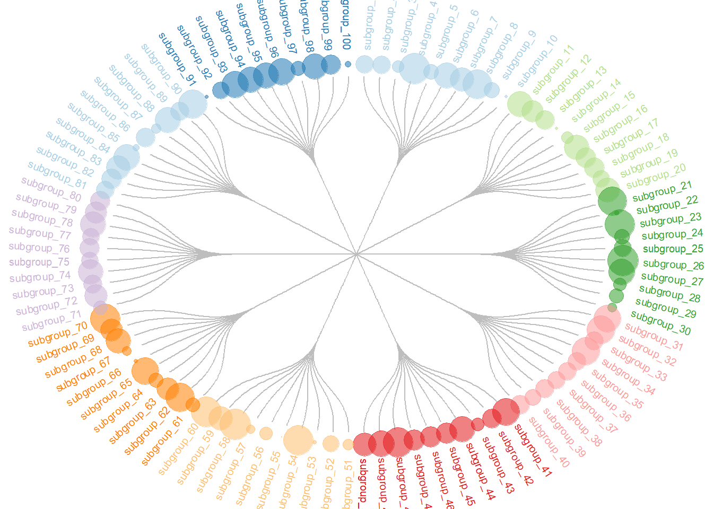
# 加载collapsibleTree包，用于绘制交互式树状图
library(collapsibleTree)
# 使用warpbreaks数据集，按wool、tension、breaks三个层级绘制树状图
collapsibleTree(
warpbreaks, # 数据集
c("wool", "tension", "breaks") # 层级顺序
)使用collapsibleTree包绘制交互式树状图（dendrogram）
使用 hclust() 进行基础层次聚类并绘制树状图
# 构造一个模拟数据矩阵，包含20个样本和10个变量
data <- matrix(sample(seq(1, 2000), 200), ncol = 10)
rownames(data) <- paste0("sample_", seq(1, 20)) # 设置行名为 sample_1 ~ sample_20
colnames(data) <- paste0("variable", seq(1, 10)) # 设置列名为 variable1 ~ variable10
# 计算样本之间的欧氏距离（仅使用第4到第8列变量）
dist <- dist(data[, c(4:8)], diag = TRUE)
# 使用hclust函数进行层次聚类分析
hc <- hclust(dist)
# 绘制聚类结果的树状图（dendrogram）
plot(hc)可以聚焦于树的一部分。使用 [[..]] 运算符选择感兴趣的组：
# 将层次聚类对象（hc）转换为dendrogram对象，便于后续操作
dhc <- as.dendrogram(hc)
# 设置绘图区域的边距，顺序为下、左、上、右
par(mar = c(4, 4, 2, 2))
# 绘制dendrogram的第二个分支（子树），实现对树状图局部的放大显示
plot(
dhc[[2]],
main = "zoom on a part of the dendrogram" # 设置主标题
)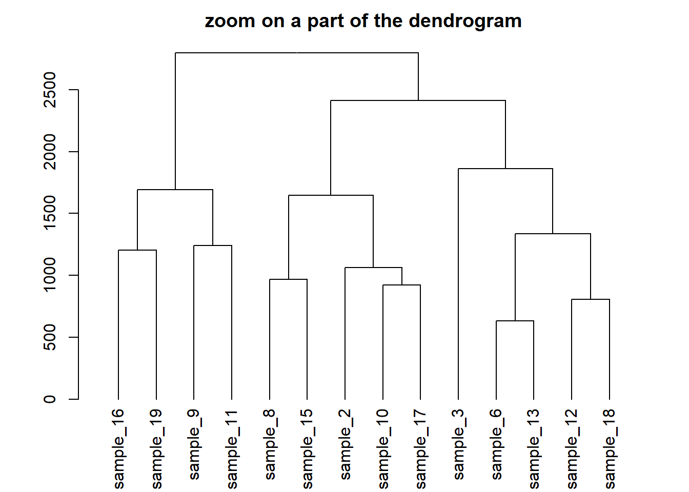
# 构建模拟数据集，包含24个样本、3个分组变量和5个基因表达量
sample <- paste(rep("sample_", 24), seq(1, 24), sep = "")
specie <- c(rep("dicoccoides", 8), rep("dicoccum", 8), rep("durum", 8))
treatment <- rep(c(rep("High", 4), rep("Low", 4)), 3)
data <- data.frame(sample, specie, treatment)
for (i in seq(1:5)) {
gene = sample(c(1:40), 24)
data = cbind(data, gene)
colnames(data)[ncol(data)] = paste("gene_", i, sep = "")
}
# 高氮处理的样本基因表达量整体加100
data[data$treatment == "High", c(4:8)] = data[
data$treatment == "High",
c(4:8)
] + 100
# durum品种的样本基因表达量整体减30
data[data$specie == "durum", c(4:8)] = data[data$specie == "durum", c(4:8)] - 30
rownames(data) <- data[, 1] # 设置行名为样本名
# 查看数据集结构
# head(data)
# 计算样本间欧氏距离（仅用第4到8列基因表达量）
dist = dist(data[, c(4:8)], diag = TRUE)
# 层次聚类分析
hc <- hclust(dist)
dhc <- as.dendrogram(hc)
# 查看树状图某个叶节点的属性
specific_leaf <- dhc[[1]][[1]][[1]]
# specific_leaf
# attributes(specific_leaf)
# 定义函数，为每个叶节点添加颜色、字体和大小等属性
i = 0
colLab <<- function(n) {
if (is.leaf(n)) {
# 获取当前节点属性
a = attributes(n)
# 根据标签找到原始数据行，获取处理和品种信息
ligne = match(attributes(n)$label, data[, 1])
treatment = data[ligne, 3]
if (treatment == "Low") {
col_treatment = "blue"
}
if (treatment == "High") {
col_treatment = "red"
}
specie = data[ligne, 2]
if (specie == "dicoccoides") {
col_specie = "red"
}
if (specie == "dicoccum") {
col_specie = "Darkgreen"
}
if (specie == "durum") {
col_specie = "blue"
}
# 修改叶节点属性，包括点的颜色、标签颜色、字体等
attr(n, "nodePar") <- c(
a$nodePar,
list(
cex = 1.5, # 点的大小
lab.cex = 1, # 标签字体大小
pch = 20, # 点的形状
col = col_treatment, # 点的颜色（按处理分组）
lab.col = col_specie, # 标签颜色（按品种分组）
lab.font = 1, # 标签字体
lab.cex = 1 # 标签字体大小
)
)
}
return(n)
}
# 应用自定义函数到树状图所有叶节点
dL <- dendrapply(dhc, colLab)
# 绘制自定义样式的树状图
plot(dL, main = "structure of the population")
# 添加图例，说明颜色和分组含义
legend(
"topright",
legend = c(
"High Nitrogen", # 高氮处理
"Low Nitrogen", # 低氮处理
"Durum", # 品种durum
"Dicoccoides", # 品种dicoccoides
"Dicoccum" # 品种dicoccum
),
col = c("red", "blue", "blue", "red", "Darkgreen"),
pch = c(20, 20, 4, 4, 4),
bty = "n",
pt.cex = 1.5,
cex = 0.8,
text.col = "black",
horiz = FALSE,
inset = c(0, 0.1)
)set()# 加载tidyverse包，用于数据处理
library(tidyverse)
library(dendextend) # 用于dendrogram对象的定制
library(patchwork) # 用于拼接多个图形
# 使用mtcars数据集的mpg、cyl、disp三个变量进行层次聚类
dend <- mtcars |>
select(mpg, cyl, disp) |> # 选择3个变量
dist() |> # 计算欧氏距离
hclust() |> # 层次聚类
as.dendrogram() # 转换为dendrogram对象
# 设置绘图区域的边距，增加底部空间以完整显示标签
par(mar = c(7, 3, 1, 1))
# 基础树状图
plot(dend)# 使用set()函数定制分支颜色和粗细，以及标签颜色和大小
dend |>
set("branches_col", "grey") |> # 设置分支颜色为灰色
set("branches_lwd", 3) |> # 设置分支线宽为3
set("labels_col", "orange") |> # 设置标签颜色为橙色
set("labels_cex", 0.8) |> # 设置标签字体大小为0.8
plot()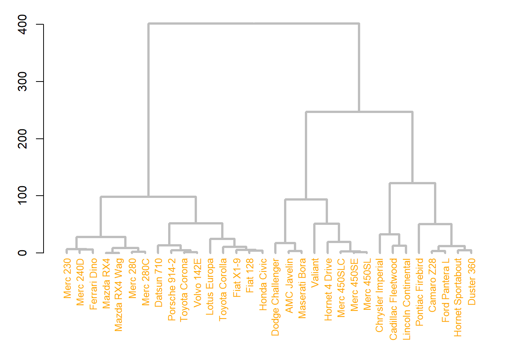
# 定制所有节点的点形状、大小和颜色
dend |>
set("nodes_pch", 19) |> # 设置所有节点的点形状为实心圆
set("nodes_cex", 0.7) |> # 设置节点点的大小为0.7
set("nodes_col", "orange") |> # 设置节点点的颜色为橙色
plot()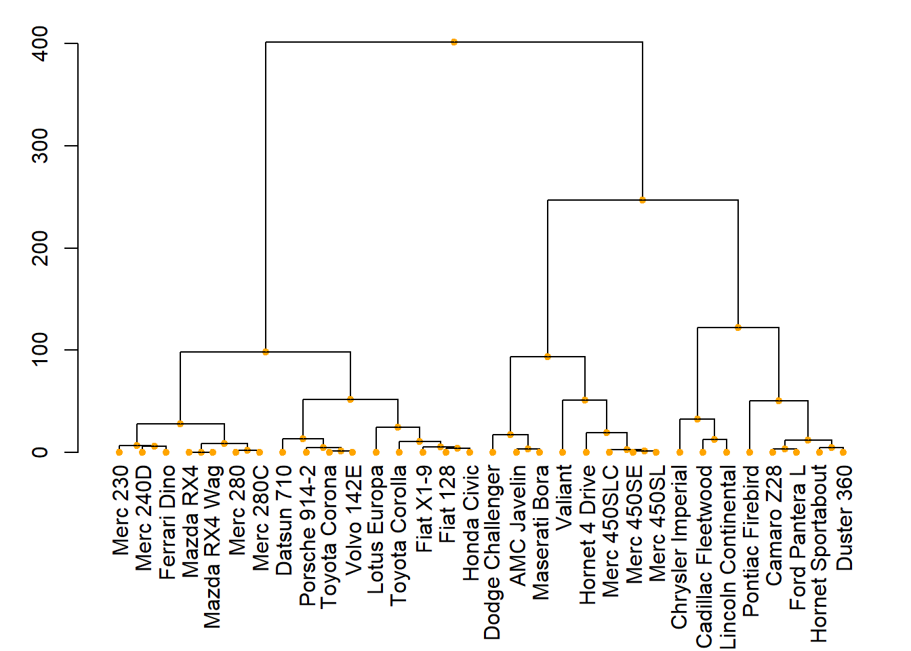
# 仅定制叶节点的点形状、大小和颜色
dend |>
set("leaves_pch", 19) |> # 设置叶节点的点形状为实心圆
set("leaves_cex", 0.7) |> # 设置叶节点点的大小为0.7
set("leaves_col", "skyblue") |> # 设置叶节点点的颜色为天蓝色
plot()# 根据聚类结果为标签和分支着色
par(mar = c(1, 1, 1, 7)) # 设置绘图区域边距，右侧留出空间
dend |>
set("labels_col", value = c("skyblue", "orange", "grey"), k = 3) |> # 按3个聚类为标签着色
set("branches_k_color", value = c("skyblue", "orange", "grey"), k = 3) |> # 按3个聚类为分支着色
plot(horiz = TRUE, axes = FALSE) # 横向绘制树状图，去除坐标轴
abline(v = 350, lty = 2) # 添加虚线，辅助观察# 高亮显示某个聚类分支（用矩形框出）
par(mar = c(9, 1, 1, 1)) # 调整边距，底部留出空间
dend |>
set("labels_col", value = c("skyblue", "orange", "grey"), k = 3) |> # 按3个聚类为标签着色
set("branches_k_color", value = c("skyblue", "orange", "grey"), k = 3) |> # 按3个聚类为分支着色
plot(axes = FALSE) # 绘制树状图，去除坐标轴
rect.dendrogram(
dend, # 树状图对象
k = 3, # 指定聚类数为3
lty = 5, # 矩形边框线型为虚线
lwd = 0, # 边框线宽为0（仅填充色，无边框线）
x = 1, # 指定高亮第1个聚类
col = rgb(0.1, 0.2, 0.4, 0.1) # 填充颜色为半透明蓝色
)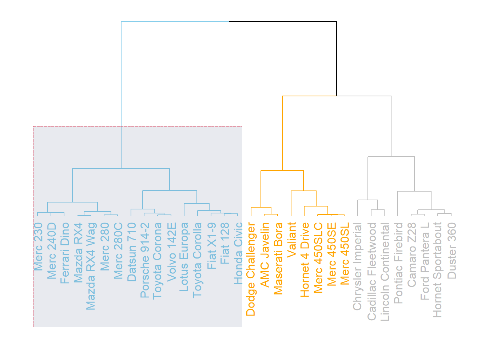
与预期聚类进行比较:
# 创建颜色向量：am为0时为深绿色（forestgreen），为1时为绿色（green）
my_colors <- ifelse(mtcars$am == 0, "forestgreen", "green")
# 设置绘图区域边距，底部留出空间以完整显示标签
par(mar = c(10, 1, 1, 1))
# 绘制树状图，分支和标签按3个聚类着色，叶节点为实心圆，节点大小为0.7
dend |>
set("labels_col", value = c("skyblue", "orange", "grey"), k = 3) |> # 标签按聚类着色
set("branches_k_color", value = c("skyblue", "orange", "grey"), k = 3) |> # 分支按聚类着色
set("leaves_pch", 19) |> # 叶节点点形状为实心圆
set("nodes_cex", 0.7) |> # 节点点大小为0.7
plot(axes = FALSE) # 去除坐标轴
# 在树状图下方添加分组色条，表示am变量的分组情况
colored_bars(colors = my_colors, dend = dend, rowLabels = "am")# 使用USArrests数据集，分别用average和complete方法进行层次聚类，并转换为dendrogram对象
d1 <- USArrests |> dist() |> hclust(method = "average") |> as.dendrogram() # average法
d2 <- USArrests |> dist() |> hclust(method = "complete") |> as.dendrogram() # complete法
# 对两棵树分别定制分支和标签颜色，并放入dendlist对象中
dl <- dendlist(
d1 |>
set("labels_col", value = c("skyblue", "orange", "grey"), k = 3) |> # 按3类为标签着色
set("branches_lty", 1) |> # 分支线型为实线
set("branches_k_color", value = c("skyblue", "orange", "grey"), k = 3), # 按3类为分支着色
d2 |>
set("labels_col", value = c("skyblue", "orange", "grey"), k = 3) |>
set("branches_lty", 1) |>
set("branches_k_color", value = c("skyblue", "orange", "grey"), k = 3)
)
# 并排绘制两棵树状图，比较聚类结构差异
tanglegram(
dl,
common_subtrees_color_lines = FALSE, # 不高亮共同子树
highlight_distinct_edges = TRUE, # 高亮不同的分支
highlight_branches_lwd = FALSE, # 不加粗分支
margin_inner = 7, # 两树之间的间距
lwd = 2 # 分支线宽
)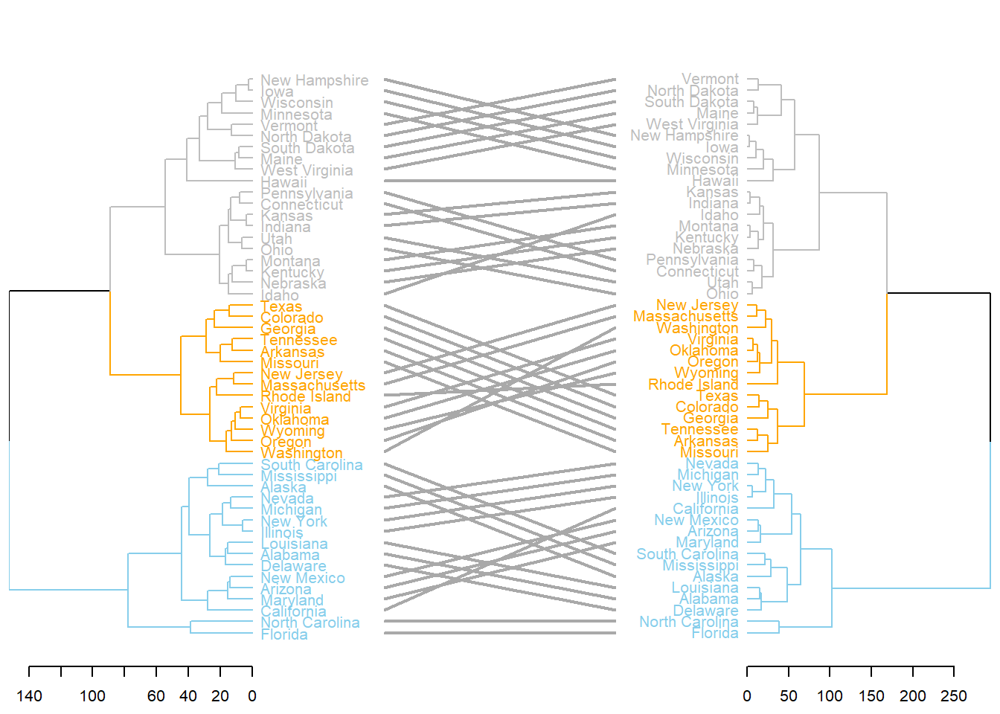